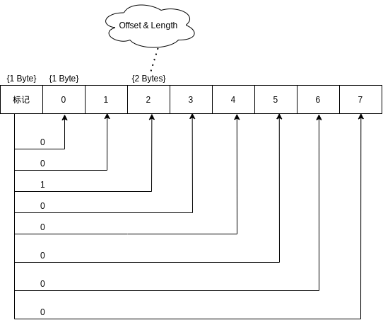
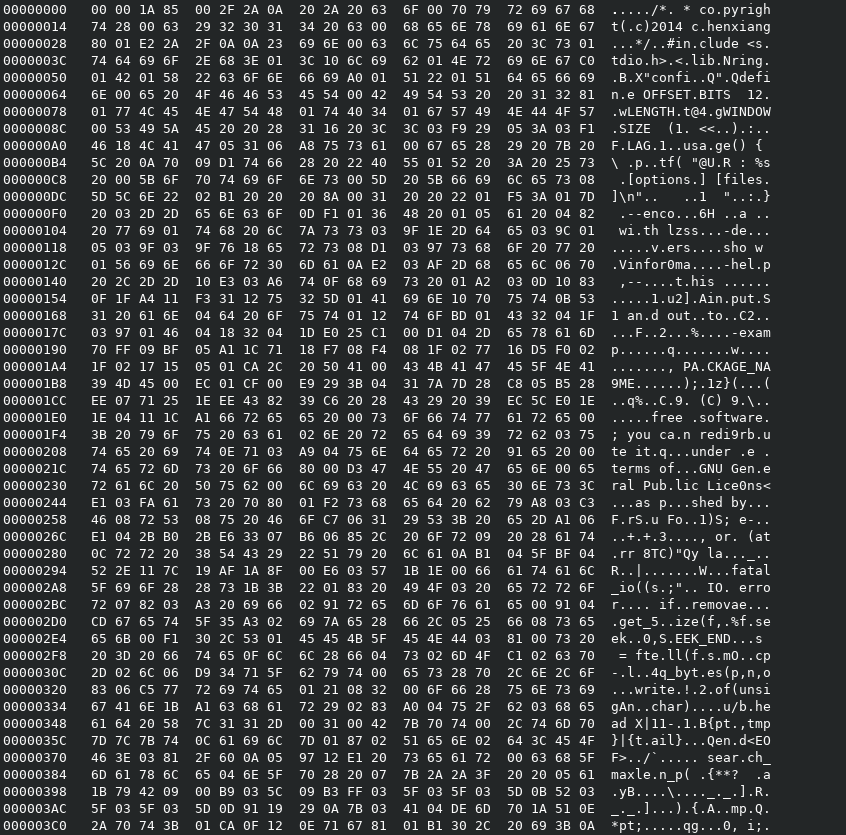

LZSS算法简介
LZSS算法是LZ77算法的改良版，由James A. Storer和Thomas Szymacski于1982年发表在ACM杂志上。LZSS算法充分地利用了位的标记，从而使得压缩效率相比较于LZ77而言，有了显著提高。
参考维基百科lzss
算法逻辑
在看本篇博文之前，需要知道LZ77算法的大体流程，如果不清楚可以点击这里浏览。
LZSS算法和LZ77算法的编码/解码流程逻辑是一致的，区别在于数据编码标记上，这里详细叙述一下LZSS的数据编码标记，可以看到它这种方式是如何显著提高压缩效率的。
在LZSS算法的数据编码里面有一个重要概念，就是：数据分组。
一个字节由8位组成，因此可以用一个字节来标记后面的至少8字节是否存在压缩编码，而不用\0x00\0x00的前缀来区分是否被压缩，从而节省了大量的\0x00\0x00前缀空间开销。
数据分组标记方式：

由此看见，这种数据分组的方式，最坏的情况下，只会每8个字节增加一个字节的额外空间开销，比起每个字节另外需要2个字节的空间开销而言，效率大幅提升。
源码实现
辅助函数：
1
2
3
4
5
6
7
8
9
10
11
12
13
14
15
16
17
18
19
| unsigned int search_maxlen_p( unsigned char** pt, \
unsigned char* head, \
unsigned char* tail, \
unsigned char* end)
{
unsigned char* tmp = *pt;
unsigned int leng = 0, i;
for(tmp;tmp >= head;tmp--){
if(tmp[0] == tail[0]){
for(i = 0;(i < ((1 << LENGTHBITS) + 1)) && (&tmp[i] > head) && (&tmp[i] < tail) && (&tail[i] < end) && (tmp[i] == tail[i]);i++);
if(i > leng){
leng = i;
*pt = tmp;
}
}
}
return leng;
}
|
编码实现：
1
2
3
4
5
6
7
8
9
10
11
12
13
14
15
16
17
18
19
20
21
22
23
24
25
26
27
28
29
30
31
32
33
34
35
36
37
38
39
40
41
42
43
44
45
46
47
48
49
50
51
52
53
54
55
56
57
58
59
60
61
62
63
64
65
66
67
68
69
70
| int lzss_encode(FILE* in,FILE* out)
{
unsigned char* buf = 0,* head = 0,* tail = 0;
long size = 0;
if(! in || ! out)return 1;
get_filesize(in,size);
if(size <= 0)return 1;
buf = (unsigned char*)malloc(size* sizeof(unsigned char));
if(! buf)return 1;
if(fread(buf,sizeof(unsigned char),size,in) == size){
unsigned int np = 1 ,control_count = 0;
unsigned char suf[17] = {0};
fputc((size >> 24) & 0xff,out);
fputc((size >> 16) & 0xff,out);
fputc((size >> 8) & 0xff,out);
fputc((size >> 0) & 0xff,out);
head = tail = buf;
for(;;){
head = tail - WINDOWSIZE;
if(head < buf)head = buf;
if(control_count >= 8){
put_bytes(suf,np,out);
memset(suf,0,sizeof(suf));
np = 1;
control_count = 1;
} else {
control_count++;
}
if(tail > buf + size - 1)break;
if(head < tail){
unsigned int bytes = 0;
unsigned char* pt = tail - 1;
bytes = search_maxlen_p(&pt,head,tail,buf + size);
if(bytes > 2){
suf[0] <<= 1;
suf[0] |= OFFLENFLAG;
suf[np++] = (unsigned char)(( (tail - pt) >> LENGTHBITS) & 0xff);
suf[np++] = (unsigned char)((((tail - pt) << LENGTHBITS) + bytes - 2) & 0xff);
tail += bytes;
} else {
suf[0] <<= 1;
suf[np++] = tail[0];
tail++;
}
} else {
suf[0] <<= 1;
suf[np++] = tail[0];
tail++;
}
}
for(control_count;control_count <= 8;control_count++)suf[0] <<= 1;
put_bytes(suf,np,out);
}
free(buf);
return 0;
}
|
解码实现：
1
2
3
4
5
6
7
8
9
10
11
12
13
14
15
16
17
18
19
20
21
22
23
24
25
26
27
28
29
30
31
32
33
34
35
36
37
38
39
40
41
42
43
44
45
46
47
48
49
50
51
52
53
54
55
56
57
58
59
60
61
62
63
64
65
66
67
68
69
| int lzss_decode(FILE* in,FILE* out)
{
unsigned char* in_buffer = 0,* out_buffer = 0,* head = 0,* tail = 0;
long in_size = 0,out_size = 0;
if(! in || ! out)return 1;
get_filesize(in,in_size);
if(in_size <= 0)return 1;
out_size = (fgetc(in) & 0xff) << 24;
out_size += (fgetc(in) & 0xff) << 16;
out_size += (fgetc(in) & 0xff) << 8;
out_size += (fgetc(in) & 0xff) << 0;
if(out_size <= 0)return 1;
in_buffer = (unsigned char*)malloc(sizeof(unsigned char)* in_size);
if(! in_buffer)return 1;
out_buffer = (unsigned char*)malloc(sizeof(unsigned char)* out_size);
if(out_buffer){
if(fread(in_buffer,sizeof(unsigned char),in_size,in) == in_size - 4){
unsigned int control_count = 0;
unsigned char control_flags = 0;
unsigned char* pt = (unsigned char*)in_buffer;
head = tail = out_buffer;
control_flags = pt[0];
pt++;
for(;;){
if(pt >= (in_buffer + in_size - 4))break;
if(control_count >= 8){
control_flags = pt[0];
pt++;
control_count = 1;
} else {
control_count++;
}
if(control_flags >> 7){
unsigned int offset = 0,length = 0,i;
offset = pt[0] << LENGTHBITS;
offset += (pt[1] >> LENGTHBITS) & 0x0f;
length = (pt[1] & 0x0f) + 2;
for(i = 0;i < length;i++){
tail[i] = ((unsigned char*)(tail - offset))[i];
}
tail += length;
pt += 2;
control_flags <<= 1;
} else {
tail[0] = pt[0];
tail++;
pt++;
control_flags <<= 1;
}
}
fwrite(out_buffer,sizeof(unsigned char),out_size,out);
}
free(out_buffer);
}
free(in_buffer);
return 0;
}
|
算法分析
经过LZSS压缩的数据，已经算得上很不错的了，可见下图的十六进制展示：

但是，这里面的数据还有进一步空间优化，可以使用LZ77算法博文里面提到的哈夫曼编码进一步编码，就可以得到理想的压缩效果。
链接：Github上的代码